MKGE：用共享多模态概念刻画推荐偏好
复旦大学数据科学学院 Ao Xu、Jinhui Huang、Wenqiang Tang、Tiehua Mei、Hongru Hou、Hengrui Chen、Jiaqing Liang 和 Deqing Yang 提出 MKGE，把可跨物品复用的图文语义组织成图谱概念，再以同一套概念表示用户的近期和长期偏好。论文于北京时间 2026 年 11 月 25 日提交，列入 11 月 26 日的 arXiv 公告。作者在摘要页注明 WSDM 2027 主会接收，论文首页载有会议信息，Crossref 尚未查到对应条目。作者仓库可访问，本文依据论文与公开工件，未运行作者实验。论文入口 · MKGE 代码、构图提示和静态图谱
多模态模型已经能识别物品的细粒度语义，但推荐系统仍常用用户对整件物品的交互来表达偏好。反复出现在不同物品中的语义因素缺少可持久引用的身份，难以在历史之间累计证据。
1. 背景和问题
1.1 物品描述与行为证据处于不同粒度
图像和标题提供的是关于某件物品的证据。用户行为则提供关于整个物品的选择，点击者可能看重画面色调、题材、品牌、价格，也可能仅仅是看到它排列在最前。非结构化的隐式行为监督只给定物品标识和动作，常见的用户向量聚合会把多种因素一同传给下游。因此，即使新的物品侧编码器把灯光与人物风格分别表征，用户侧的历史聚合也未必能明确告诉系统哪几次行为支持同一个因素。这个错位在互动少、物品类型差异大时尤其显眼：系统很难沿着物品标识找到数量足够的共现，也难以直接展示一个跨物品的历史模式。
有目标感知的排序器可以用候选物品去反查历史并调整注意力。它实际上回答「为了预测这个候选，历史里哪些向量应该读得更多」。MKGE 想增加另一个问题：「这个用户过去看过的哪些东西足以支持一个可复用的偏好节点，新候选中是否也存在该节点」。两者都追求提炼相关历史，数据接口不同。候选条件注意力的相关部分通常依赖一次请求，换一个候选会重新计算。规范化概念可以作为目录状态和用户状态的一部分，在候选变化时保留原身份，并记录复现它的历史证据。把附有模态证据的概念变为一名用户的长期状态仍然需要筛选，物品图的边不会自动成为用户图的边。
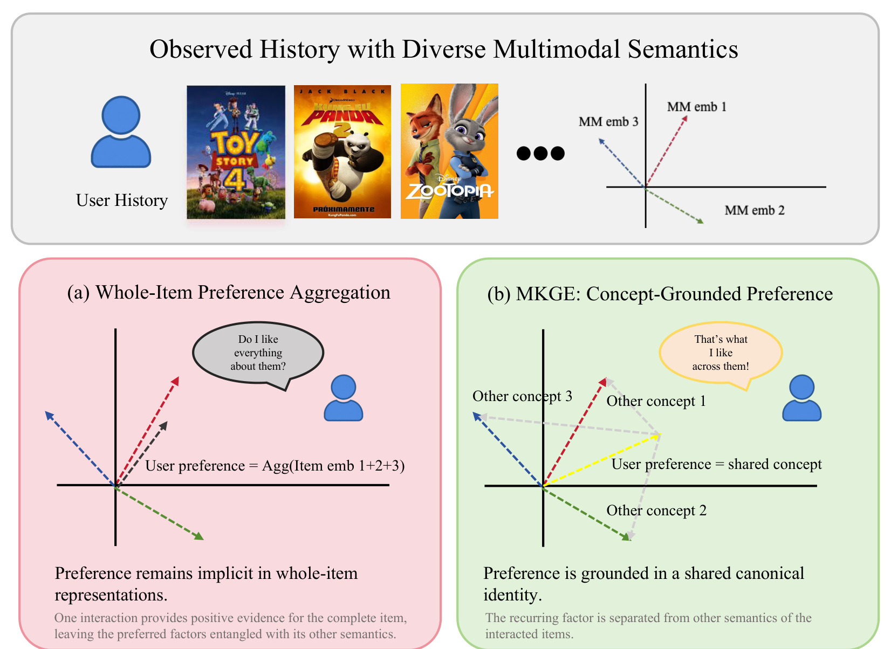
Figure 1 上方把同一用户的几部电影放在一起，右侧三条箭头代表各自整件物品的多模态表示。左下示意图将整件表示聚合，因此除重复因素外，各电影独有的风格成分也进入结果。右下将物品逐一解释为若干概念，再从历史中择出可重复观察的黄色方向。图里的坐标和箭头是概念关系示意，没有可读的实测相似度或用户权重。可操作的差异在于黄色方向一旦被赋予规范化标识，训练时未与该用户同现、但拥有该标识的候选，可以通过一个共享节点得到传递证据。反过来，某张海报里偶然出现的局部因素即使和候选相关，仍需经过历史选择才能进入用户短期或长期状态。图只解释为什么要改偏好表示单位，不提供跨物品迁移必然提高排序的证据。效果还取决于词表是否合并了同义描述、是否区分相邻概念，以及被保留的历史边是否比频率排序或拓扑重接更贴合用户。
1.2 共享身份、历史选择和协同互补
共享身份的必要条件是跨物品抽取结果可连接。举例来说，模型可能分别把相近场景写成明亮布光、高调光线或鲜明照明，文本可以读懂，直接当作图节点则会把证据打散。同义词被分裂时，两个不同物品产生两条不相交的路径，候选与用户的有效证据被分开计数。反方向的错误也重要，把色调、环境照明和氛围全部并为“明亮”，节点就可能连到过多物品，几乎任何人都能与它匹配。关系类型和概念身份共同限定了词义边界，保持灯光、情绪和题材的区别，是让共享兼顾覆盖率与辨识度的条件。经典知识图谱侧信息已有类型化关系，但电影年份、流派和商品目录类目只是可得元数据，不一定能直接表达图片和短标题中反复出现的复合因素。
历史选择的难点是从物品的众多属性中挑选条数有限的用户边。一个人近期连续挑选场景风格相似的内容，是近期候选的证据，尚不足以建立长期偏好。另一方面，历史活跃度低时，反复出现的现象可能已经很稀疏，要求每个因素达到高频也会丢失信息。论文的设计因此同时接受桶内短期证据和跨桶长期证据，再把这两类边作为不同关系学习；统计上是否真的依赖用户对应关系，应在同一词表下替换选择器、移除用户边或重接边。频率对照可检验用户候选计数已经解释了多少，度保持重接可检验单纯提高连通性解释了多少。这些对照的作用是回答建边机制有多少边际价值，而不是把所有新图的收益交给语言模型。
第三个难点是图文语义并不能包住全部行为因素。评分或购物受到价格、人气、库存和社交关系影响，电影海报也不完整呈现影片。直接交互边保留这些方面的行为信息，语义分支向较少见的候选补充可解释的邻接。论文针对这三件事分别设定证据：比较标准化前后跨物品连接，比较用户概念选择和结构对照，最后切除双路径或边类型。还需分清实验回答的目标是把实际保留物品推前，而不是解释用户选择的真实原因。任何被推荐系统频繁展示的物品都会贡献交互，也可能在用户画像中形成大量边。若用于在线产品，按来源保存历史证据比在图上把一条边解释成真实意愿稳妥得多。
实验中值得保留一个更细的边界：词表可以用目录物品的图文确定哪些概念存在，但用户画像只从该用户的训练前缀形成。这样一件未被某用户点击的物品仍可用现成目录边参加排序，而建立用户偏好边时没有用到该物品未来的交互。相应地，论文测到的是目录内容已备齐时的归纳能力。对一个新入库且图文尚未解析的商品，无法直接利用这部分语义路径，图模型也可能缺少已训练的物品初始化。用这两个设定区分「用户没见过」与「系统没有见过」，能更准确地理解为什么弱协同用户有望获益，以及为什么论文没有单列新物品零样本结论。另一个评估问题是，同样的共享词表既可以让完整方案形成正确的用户对应，也可以为频率或度保持方案提供大量邻居。当不同方案只改变用户概念边的连接方式时，完整方案的改变量才更接近历史选择的贡献。
2. 方法
2.1 发现、规范化与受约束抽取
物品侧先建立目录共享的词表。Discover 对流行度分层后的约 5% 物品，使用多模态模型读取图像和短标题，开放式生成关系及概念候选。电影样例的主题、氛围和照明不直接按商品规格标签解释，Beauty 的颜色和饰面也不需要勉强放入电影类目。Standardize 先用嵌入与 BERTopic 对关系命名聚类，再让语言模型整理关系，概念则在每种关系内部聚类和精炼。词表扩展保留 NEW_ 标记帮助识别词表外语义，从目录的 20% 做标准化及覆盖验证，报告三域两轮内达到保留集 90% 词表映射覆盖。覆盖率的分母是抽出的关系—概念对，匹配通过说明已有名字可以容纳它，无法说明命名或者视觉判断本身正确。Constrain 冻结词表后处理整个目录，抽出物品—关系—概念三元组。训练前可由同一概念串接多个物品，训练和请求时只见与类型绑定的稳定节点。
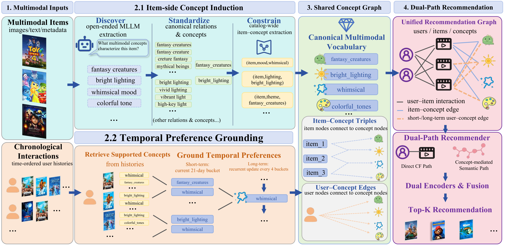
Figure 2 左上输入是图片和短标题，左下输入是时间排序的用户交互。上路从开放描述走向小词表，先让有价值的新因素进入候选，再把不同写法收拢。例如图中多个和奇幻生物有关的名字归到同一主题节点，多个明亮照明描述归到另一个有独立语义类型的节点。完成词表后，物品侧调用只能选择目录里的概念，把结果按物品建边。下路先读历史物品已经附着的概念，再对一桶历史累积证据并选择近期节点，多桶结果和前一长期状态共同产生长期节点。两路相互独立的含义是用户选择器不需要针对每个候选重新抽取图文，也不会借候选或测试交互归纳历史。中间列的同一规范词表保证两种输出可连通，而用户、物品、概念三个节点类进入右侧异质图。紫色直接交互路径可以在没有语义边时延续协同信号，概念路径按物品边、短期边和长期边读取跨物品内容证据，最后融合的是用户与物品两侧的编码状态。语义支路并不根据图上的概念名称逐条生成推荐列表，右下角 Top-K 是学习后的相关性打分。图把昂贵的大模型阶段和频繁的排序阶段隔开，也暴露了更新时需要对齐词表版本的问题。若目录重新标准化把一个概念拆成两个，直接覆盖旧标识会改变所有已存在的用户边意义，实际维护需考虑历史快照如何迁移。
论文用一个显式矩阵解释跨边匹配。每个关系单独建立物品到概念的图层，合并后的二元邻接提供共享概念索引。用户可以用短期层或长期层分别计算候选相合度。
符号解释。$q$ 区分短期和长期，$u$ 是用户，$i$ 是候选物品，$e$ 是规范概念。$P^q_{ue}$ 记录用户是否有相应偏好边，$A_{ie}$ 标记候选是否有此概念，$D_E$ 是以物品端度数 $d_e$ 为对角的矩阵。高连接度概念被分摊，连接稀有属性贡献较大。这里写的是共享路径计数的解释性定义，最终排序使用学习到的双路向量内积。被标准化到同一列的历史证据更容易在同一张图连起来，图模型再从实际样本学习如何加权。
2.2 两种时间尺度的偏好落地
对一个时间桶先取用户已交互物品及其概念，按关系计算观察计数，每组保留最常见的二十个概念。选择器收到候选和计数，只能从中挑一个全局最多十项的集合，候选数量够时恰好挑十项。提示要求保留频繁、具区别性的概念，压低几乎一切物品都拥有的泛化因素。模型得到的是与历史交互相联的三元组，观察桶里从未出现的因素不会凭空成立。候选计数使用时间桶内的二元隐反馈矩阵，不把对同一个物品重复点击直接视为多件物品贡献。至多十项意味着被选的概念共享相同边权，选择概率或语言模型置信度并不作为在线图边权。
符号解释。$t$ 是桶索引，$r$ 是关系，$R^t$ 是桶内交互二元邻接，$A^r$ 是某类型下的物品概念邻接，$C_{u,t,r}$ 包含有至少一件观察物品支持的概念。计数能区分重复出现与一次出现，支持范围止于实际物品边，仍可能继承抽取错误。
符号解释。$g_\theta$ 是受约束的语言模型选择器，$B$ 为全局十项预算，零范数统计输出非零边。最后的不等式是证据约束，筛掉无法由本桶交互物品佐证的可选项。它提供的是可查证的关联条件；仅凭边存在很难区分主动喜好与曝光驱动的重复。
每个短期桶为 21 天，每处理四桶才更新长期状态，未满四桶时长期图可为空。首次长期更新由四个近期集合初始化，后续还接收上一期长期状态，通常更重视最近四桶中至少出现三次的概念，一至两桶的因素偏短暂，近期证据消失的老概念允许淘汰。作者描述保留项增加 21 个活跃日、新项从 21 日开始，输出五到十项。年龄是递推输入字段，不能直接理解为每次更新把日历向前推进 21 天。
符号解释。$g_\phi$ 是长期归纳器，$P^{L,t-K}$ 保留历史长期概念，$P^{S,t-K+1:t}$ 是最近四次短期状态，$\boldsymbol\delta_{u,t}$ 记录概念年龄和跨桶出现频率。输出只可在输入概念内选择。训练前缀处理完毕后文章为每人导出一个静态快照，保留最后有效的短期桶和最新长期状态，以前的短期桶只通过长期递推产生影响。评估时没有逐次从测试序列更新用户边。若实际系统维护滚动画像，需把增量刷新的时刻和每次决策能读到的快照一并记录。
2.3 双图传播、融合与打分
异质图里有用户、物品、概念三种节点，正反方向边支撑双向传播。CF GAT 只走直接用户—物品关系，KG GAT 只走物品概念及用户的长短期概念关系。编码器分享用户和物品的可学初始化，在不同邻接上更新。同一层内关系特定的注意力先在各关系邻居独立归一化，再加起不同关系的变换输出。一个概念门会先缩放概念初始向量，作者按图频次对初值分档，不足五次给 0.3，超过一千次给 0.8，中间区间给 1，随后端到端优化。该门针对所有用户共用，不会把某个用户不喜欢的语义直接屏蔽。
符号解释。$z_e$ 是概念门参数，$\mathbf e_e$ 是概念初始化，$\widetilde{\mathbf e}_e$ 是进入语义图传播的结果。$\mathbf h^{CF}$ 和 $\mathbf h^{KG}$ 是两图输出，MLP 拼接融合；物品端使用独立 MLP。两个小图支路保持各自的图结构，两个初始化共享可以减轻从完全独立向量系统对齐的难度。
符号解释。$i^+$ 为观察正例，$N_u$ 为采样的未观察物品，$\tau_r$ 是温度。原文实现每个正例取一个负样本，正负竞争训练融合分数，未观察物品仍有可能因缺少曝光而没有交互。测试时某协议使用九十九个随机干扰物品，不等同于训练负样本数。
符号解释。$\bar{\mathbf h}$ 是二范数归一化表示，$\mathcal B_c$ 是用户对比批次，$\tau_c$ 是对比温度。一个用户的 CF 方向与自有 KG 方向是正配对，其他用户的 KG 向量作分母干扰项。该项作用于用户表示，不等同于要求每个概念节点或每一条关系都重合。多个用户真实兴趣相似时，也可能因为有限批次机制成为负配对。
符号解释。$\mathcal E_{IC}$ 为目录物品概念边，$N^-_{e,i}$ 从没有这条概念边的物品中采样，$K_{\mathrm{neg}}$ 为对齐负例数量、实现取五。差值正大表示概念更靠近已有边的物品。由于负例由图构造，缺边有时来自识别遗漏而非语义缺失，有必要把这个监督看成对现有图的一致性约束。
符号解释。$h_b$ 是二元熵，$\epsilon$ 防止对零取对数，$H$ 是词表平均熵。正权重下最小化第一项偏向保留概念，负熵项使熵升高，有助于减小过早饱和；不能把这个损失直接称为鼓励全局稀疏。实际门值还同时受排名与图对齐梯度影响。
符号解释。$\alpha,\beta,\gamma$ 分别加权用户跨路径对比、概念物品对齐、门正则，论文给出 0.1、0.05、0.01。$\widehat y_{ui}$ 是部署侧排序标量。训练用三种辅助目标和采样排序，评估排序时按图编码后的内积选候选。构图阶段的多模态抽取和时间选择可离线并行，论文报告的推荐模型推理由训练后的图模型承担。
3. 实验结果
3.1 数据与主结果
三个公开数据集采用逐用户时间顺序 70/10/20 拆分。长度不足三的历史全部进训练；最短的可评估历史可没有验证切片。概念建图读目录图片与标题，用户概念只从训练前缀抽出。ML-1M 主结果为全候选排序。Amazon 的每个保留正例和九十九个均匀无放回的负样本竞争，负样本排除该用户训练、验证和测试期已交互物品。指标先按正例专用候选集处理再汇总，论文另说大模型基线逐候选条件推理，方法间固定同种子候选。表内两个指标一起读，NDCG@10 有位次折扣，Recall@10 则更直接衡量落入前十的正例。
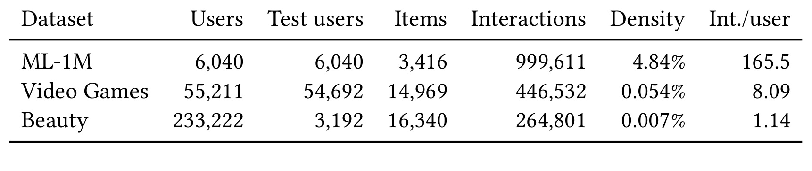
Table 2 给出可参与训练的用户与可参与测试的用户两个列，后一列在稀疏场景尤为重要。ML-1M 有 6040 用户、3416 物品、999611 交互，全部用户进入测试，平均交互 165.5；Video Games 有 55211 用户，54692 名可测试，14969 物品和 446532 次交互，平均每人 8.09。Beauty 没有使用另两库的五核过滤，即保留较少交互的账户与物品，目录有 16340 物品，233222 用户贡献 264801 次交互，平均只有 1.14 次，密度为 0.007%。但 Beauty 的测试用户只有 3192，约占原人群 1.37%，因为需要非空保留段。正文说这些人平均有 2.15 次已训练交互，中位数为 2，四分位区间 2–2。表面上极稀疏的整个数据集与真正参与效果计算的人群不是同一个集合。若要解读弱行为冷启动，按用户的训练证据细分或额外评测零历史人群，不能用包含无测试用户的全体平均次数替代实际分层口径。表的数据还解释了一个评估上的权衡，Beauty 的全候选表若改为全量目录会更难，不能直接拿两个协议的绝对值描述哪类商品更易学。
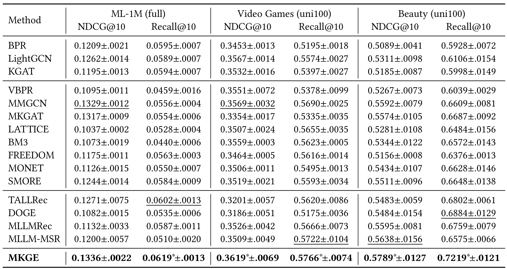
Table 1 按电影、游戏、Beauty 依次列出 NDCG 和 Recall，每一列以自身最强基线为比较对象。电影全量排序中 MKGE 的 .1336 与 MMGCN 的 .1329 相差 .0007，按基线为分母约 +.53%，是表中唯一未标显著的 MKGE 指标；Recall 从 TALLRec 的 .0602 到 .0619，绝对增 .0017，相对约 +2.82%。Video Games 的均匀抽样下对最强基线，NDCG 从 .3569 到 .3619，Recall 从 .5722 到 .5766，相对约 +1.40% 和 +.77%；Beauty 的 NDCG 从 .5638 到 .5789，Recall 从 .6884 到 .7219，相对约 +2.68% 和 +4.87%。最后一行六个均值都最高，五个星号代表按论文的五组下游训练种子做配对检验达 p<.05。不要将电影主结果的未显著 NDCG 写成统计确认，也不应把表中的显示标准差解读为词表重新抽样或图谱重建的方差。作者使用 RecBole 或论文官方实现，并在验证集做共同超参选择；具体方法组包括 BPR、LightGCN、KGAT、多模态 MMGCN、MONET、SMORE，以及 TALLRec、DOGE、MLLMRec、MLLM-MSR。这些行说明固定图构造加双路径模型在本实验内有竞争力。同一设置内换一个参照物，提升幅度也随之改变。作者另外以 MONET 和 SMORE 中的更强结果作为参照，报告电影 NDCG 增约 7.40%，该数字比全基线最佳的 +.53% 大，因为较强参照只来自指定两行。用无条件的多模态图 MMGCN 做 NDCG 基准和用以候选读历史的排序器做基准，回答的是不同对比。同时六个均值可能分别对应不同强者，从这里无法推出任何一个基线在所有数据上同时落后固定百分点。还需检查抽样负例是否对依赖稀疏多模态图的排序有利，以及打开全目录后是否会遇到长尾概念边缺失导致的排名退化。跨数据集跨候选协议时，尤其不能把 Amazon 的高绝对 Recall 作为全目录胜出的证据。若要衡量上线候选的排序质量，需以相同实际召回池加入内容相近或热门的干扰物品，再看收益是否保持。
3.2 概念对应与活跃分层
作者把相同目录概念和推荐器保留，只对每人连接的概念做替换。No User KG 去掉用户概念边，Frequency 取观察历史中最常见概念，IDF 用历史内计数乘以概念在训练用户中的逆文档频率，后两者与完整模型的长短期边预算匹配；Rewired 分别对长短期二部图做保度重接，保留端点度及边类型，却破坏用户与所附概念的对应。频率约束和逆频率可能在不同领域产生不同对照强度，因而最好看三路都接近的结论。
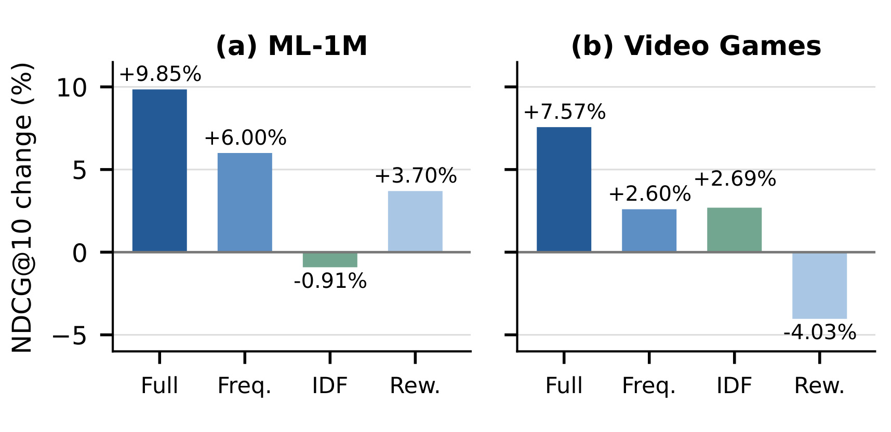
Figure 3 的零点表示相对于 No User KG 的无变化，纵轴是 NDCG@10 相对差，电影和游戏均在固定 uni100 候选上展示。电影的完整方案为 +9.85%，Frequency +6.00%，IDF −0.91%，Rewired +3.70%。游戏则是 Full +7.57%，Frequency +2.60%，IDF +2.69%，Rewired −4.03%。同一种重接电影提高、游戏降低，说明原始拓扑和度分布在不同目录可能留下不同的信号，也正好说明不能靠单个去边对照来认定个性化贡献。Full 同时领先 Frequency 和 IDF，说明对既有支持集做进一步选择有价值。正文报告电影四个对照均达配对检验 p<.05，游戏只有对 Rewired 的比较达该门槛。该图另用三个种子、BF16、8192 批量和匹配后的候选；表一用了五个下游种子，两组程序不应共用同一显著性结论。图的三种替换共同提高了解释力，不过 Rewired 会把部分边连到无历史支持的概念，所以与 Full 的差距同时包括支持一致性及具体选择。频率及逆频率在历史支持内选择，更接近判断语言选择器相对简单规则的增量。两组都能受益与线上行为的因果来源仍然不同，曝光策略和目录可见度在这组对照中没有改变。
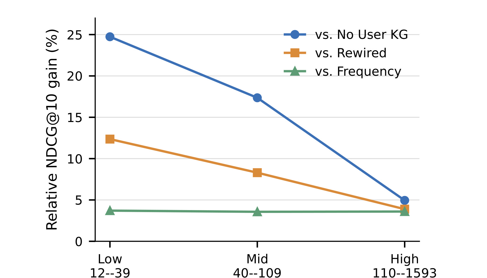
Figure 4 将 ML-1M 近似平分为 12–39、40–109 和 110–1593 次训练活动三个层，三条线都用该层相应对照的 NDCG@10 作相对分母，分层阈值来自观察训练活动数，属于事后分析的人群边界。部署解读时也应记录组内每个用户有多少候选可通过概念连回历史，以及三个层的图谱覆盖率。完整方法对 No User KG 的改善从 +24.74% 降到 +17.36%、+4.95%；对 Rewired 为 +12.36%、+8.30%、+3.89%；对 Frequency 三层都约 +3.6%。由此可分开两个判断：能从正确的概念对应补充弱协同证据，对低活跃层的相对效用更高；从频数规则进一步换成受约束语言模型选择，相对优势在该按活跃度分组的比较里大致平齐。图中没有展示三群基准的绝对 NDCG 或分层置信区间，较低分母也会放大相对百分数，不能只按曲线高度决定优先投放谁。最低组仍有至少十二次训练交互，模型已能提取图文属性，完全新用户的效果没有在这幅图得到测量。对需要用户画像的工程评估，可结合概念支持计数再看低活跃组有多少用户获得了可用语义边以及多人共享因素的混淆程度。
3.3 双路径与时序消融
主表的电影采用全目录，但下方消融把三库统一为 uni100，以减轻同一张多栏表中的候选处理差异。因此读取电影绝对分数必须重新找表内完整模型，而不能从全目录 .1336 出发。论文以 64 维表示、两层 GNN、四头注意力及 0.2 dropout 为代表配置，Adam 学习率为千分之一，验证 NDCG 做提前停止。共享初始化和关系划分都留在双路架构中，消融同时涉及图的可达性变化和优化目标变化。
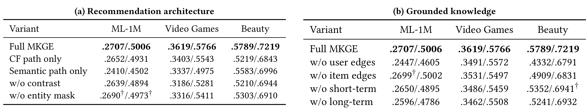
Table 3 左表依次拿掉一个编码支路、跨图对比或实体门，右表则按用户边、物品边和时间类型删边。ML-1M 完整模型 NDCG .2707，CF-only .2652，语义-only .2410，较密日志上协同支路较单独语义更强；Beauty 完整 .5789，CF-only .5219，语义-only .5583，稀疏评价场景次序反转。三库均以完整版为表内最佳，支持语义和直接行为互补。Amazon 去掉对比损害明显，Video Games NDCG .3619→.3186，Beauty .5789→.5210；电影去掉实体门为 .2690，对应表中的不显著标识。两种消融改变了模型可用监督或正则，不能用差值推导出某一图路的独立业务贡献。实体门在电影上影响较轻，在游戏和 Beauty 中摘除后两个指标均下降。这提示数据稀疏时过宽或过窄概念的影响有机会经训练自适应，但表中没有按词表频率统计门的最终值，尚不能确定是哪类节点被下调。
右表在相同规范坐标内检查不同边的必要性。Beauty 去掉所有用户概念边从 .5789 到 .4332，约 −25.2%，去掉物品边为 .4909，约 −15.2%。由于用户到候选的概念路径必须两边连通，某些删边会同时改变传播的局部邻接，而模型还可通过其余途径学习补偿。长短期单删在三组的 NDCG 都有损失，其中每个数据集在删长期边后降幅都更大。Video Games 去掉长期的 Recall .5508 反而高于去掉短期的 .5459，时间角色的排序不能简单覆盖所有指标。电影完整快照中短期平均 9.9 项、长期平均 5.0 项，98.8% 的长期边也出现在最后短期画像、99.5% 用户至少重叠一项。所以两种时间边主要表达同一语义是否有复发证据，并非两套几乎不重合的个性化标签。可进一步设置对照，把短期中复发因素用同样度数另设一种关系，检验效果来自时间保留还是关系特定参数。
3.4 词表复用与跨模型迁移
标准化的对照在 Video Games 给出使用开放输出时 NDCG 从 .3619±.0069 降至 .3510±.0038，Recall 从 .5766±.0074 到 .5662±.0042。它支持规范化与稳定连通性的作用。开放抽取还可能同时改变概念数量、覆盖、候选池大小与图连接度，实验没有严格逐个量匹配，无法把所有差距单独解释为同义词合并。
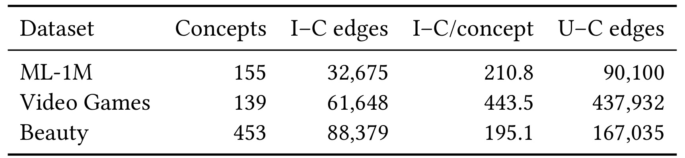
Table 4 把词表基数、物品—概念总边、每概念平均物品度和用户—概念边列开。电影 155 概念和 32675 物品边，均值每概念 210.8 条，游戏 139 概念、61648 物品边，均值 443.5，Beauty 453 概念、88379 物品边，均值 195.1。用户边则从电影 90100 到游戏 437932，再到 Beauty 167035。边量不随目录物品数或总体用户数按比例变化：用户画像有上限，活跃时间、关系甚至短期是否有边都改变计数。电影中 93 个概念连至少五十件物品、76 个至少一百件，明亮照明连 1068 件、戏剧性照明 974 件、冒险氛围 554 件。这样的大枢纽说明共享节点可广泛复用，也使错误归并的污染面很大。固定概念预算也可能导致较大词表的边更集中于常见类别，因而还要观察目录和用户端的度相关性。若某些概念仅连接物品却从不成为用户边，它们对显式偏好复用的直接作用有限。平均值读不出广覆盖标签是否真有区分度，若目录迁移，仍需结合概念频次分布、独立人工抽样正确率以及强长尾概念的保留率。电影和 Beauty 从不同域和提示得到词表，不能依据表中概念数直接评价哪一种内容更丰富。
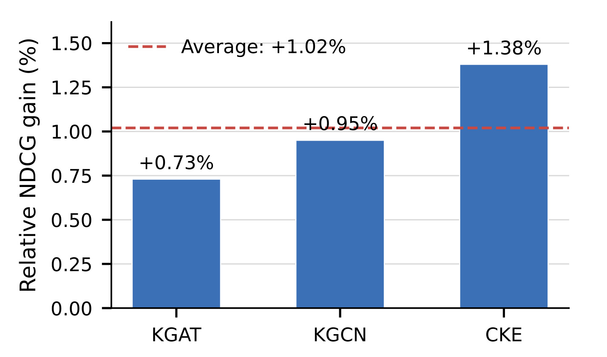
Figure 7 令 KGAT、KGCN 和 CKE 各自保留原架构，用 MKGE 的物品概念三元组替换原来的 ML-1M 流派与年份元数据图。纵轴以每种模型原来的 NDCG 为分母，三组分别提高 +.73%、+.95%、+1.38%，图中虚线是平均 +1.02%。这是物品侧语义产物的迁移检验，证明新增图在三个已测试模型中能带来小幅改善。用户侧选择和双路径结构没有纳入此对照，因此不能把这一收益解释成完整方法跨模型复现。原图替换还伴随关系语义和边数量变化，若目标是只测规范化，在固定可用边预算、度分布和数据切分下对比原流派、视觉标签与合并标签，会补齐这部分归因。模型上线更新词表时也更需要用跨版本稳定名称和证据来源来维持独立下游的读入契约。三个柱值都高于零且绝对变化不大，单一电影域也不足以评价跨语言内容或时间漂移。稳定性测试宜同时固定训练前缀，并分别测从元数据切换时全用户迁移和只覆盖有图文的新入库物品这两种路径。
3.5 构建模型和服务成本
构图依赖语言模型，对照采用不同模型完整重建而非只在冻结候选上换选择器，目的是回答图接口是否能容忍构建端替换。这一节还有互不相同的成本口径：离线概念构建为按项 API 时延，排序性能为图模型训练与按用户测量。两个阶段需要各自核算。
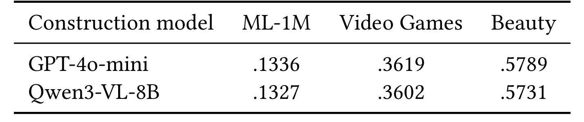
Table 5 以 GPT-4o-mini 图为基准，Qwen3-VL-8B 完整替换诱导和偏好落地，重新建图后得到电影 .1327、游戏 .3602、Beauty .5731，基准为 .1336、.3619、.5789。三列相对减少 .67%、.47%、1.00%。替换在这些数据状态下没有大幅改变下游质量，说明规范化后的节点与边可以隔离不少生成表面差别。不过三个均值方向一致偏低，表没有给各模型独立重建重复次数对应的不确定性，也没有比较同一用户的新旧画像重叠度。分数相近不能推出输出词表具有相同身份，模型的语义归并和拒绝方式都可能变。作者发出的图仍是原始 GPT 图。两路线经过相同归一化步骤，表中只有最终排序分数，没有单独报告保留集概念覆盖或每条边的人工校验结果。由于替换既影响物品侧又影响用户侧，两个误差源可能同向变化，甚至互相抵消。实际重建若要求继承旧用户状态，可以先将新模型限制为向原词表投射，分别测未覆盖比例与重建全词表长期收益，再评估两套概念对齐的成本。
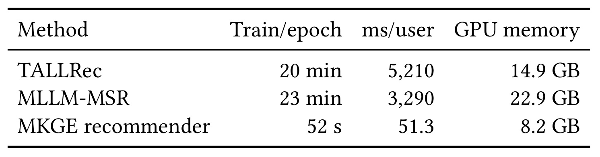
Table 6 第一列是训练每轮时长，第二列是单用户时延，第三列是 GPU 内存。MKGE 推荐器 52 秒/轮、51.3 毫秒/用户、8.2 GB；TALLRec 约 20 分钟/轮、5210 毫秒/用户、14.9 GB；MLLM-MSR 为 23 分钟/轮、3290 毫秒/用户、22.9 GB。表明确把图构建成本另算，且对手是逐候选条件的大模型系列，收益体现了架构和推理协议差别。它没有与已高度优化的工业图或两塔排序服务做同预算比较，也没有给峰值请求下分位时延。论文称物品抽取平均 4.9 秒/件、用户偏好落地平均 2.2 秒/人，二十个并行工作者将初始 ML-1M 构建计为约二十五分钟，三域记录 API 开销低于百美元。每项平均与整构建时长各依赖任务编排和并行重叠，三域历史运行费用也不等于后续全成本估算。新增物品按现词表抽取；新交互改当前桶，四桶更新长期；跨域新增语汇超过现词表容量时再做发现。这些增量策略是作者的维护方式，尚未在包含线上候选索引刷新和尾延迟的服务链中验收。
3.6 排位迁移与容量敏感性
案例把用户历史、概念证据、用户图和保留正例摆在一起，能看到一条从用户穿过概念到候选的路径与排序变化同时出现。它也给出整个数据集配对统计，避免只用三个精挑的个案说明整个排名机制。
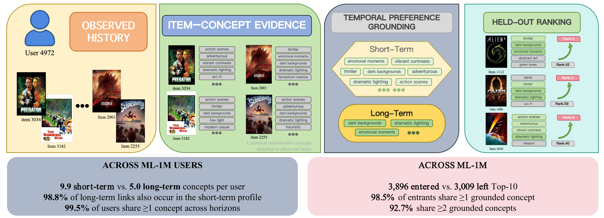
Figure 5 左起是用户 4972 已观察历史、相应物品共享的内容因素、长短期兴趣和留出的候选位置。作者用动作惊悚类历史说明一个主题及视觉属性如何在多张海报中重复，并通过长短期关系选择接入候选。图里三个留出正例由删用户图的 40–59 名升到完整方案的 2–6 名。下方总体框提供对称计数：205337 个保留正例中，有 3896 个进入前十、3009 个退出，净进 887。进入者中 3839 至少共享一个 grounded 概念，3612 共享两个以上，分别约 98.5% 与 92.7%。被移出者也需要看，否则只看进入会夸大候选替换收益。概念共现与被提升同时出现，未证明究竟是其中哪个因素造成模型偏好，也需要以未提升或退出物品的共现率作对照。这里读的是两个已训练方案重新打分后的集合更替，直接表示若变更图会移动排序；不提供用户在新排序中是否观看的因果实验。线上迁移可先做固定请求的翻入翻出回放，并把进入、退出的候选按画像支持因子、内容热门度和原召回途径分开。
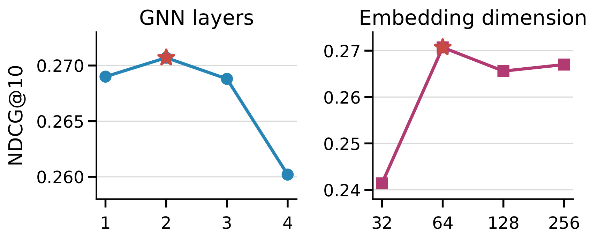
Figure 6 左图横轴是一至四层 GNN，二层达到约 .271 的最高点，三层近似回到一层附近，四层约 .260。两图的纵轴范围不一致，改变嵌入维度和层数的肉眼波动幅度不能直接对比。层数曲线的纵轴下方约为 .258，数值差比曲线视觉落差更小。直接用户到物品的概念线路确为两跳，但一层仍能从概念邻居和协同侧学习相似度，所以一层下降比完全切语义路径温和。深层的下降可能由邻居混合和超参共同造成，实验没有给出图过平滑的单独度量。右图从 32 维约 .241 上升到 64 维约 .271，128 与 256 维保持在相近区间，因而 64 维是这个调参任务的首选，并非所有目录需要的维度上限。正文另把时间切桶换为 14、21、30 天，报告 .2704、.2707、.2700，差距较小但只给三个窗口上的汇总点，和全目录主结果不是同一绝对口径。是否需要细时间窗取决于推荐域行为的节律，像电影库的低频行为与高频信息流有不同的每桶有效证据。部署前更值得检查小桶中空集合比例和长态更新耗时，再选择与用户活跃周期相配的切分。
4. 总结
4.1 对共享语义的判断
MKGE 值得拆开看成两种可复用产物，一个是跨物品持久的类型化目录表，另一个是每次由行为证据支撑的用户画像。规范化帮助把看似各不相同的物品连接起来，短期和长期关系帮助方向一致但持续性不同的因素被分别学习，双路径编码将语义收益和协同信号一并计入排序。比起单独看最终模型的均值，位置更靠前的是结构控制：保度重接在游戏中下降、在电影中上升，完整方案均优，说明图连通性不足以解释全部收益，而频率已有部分收益，说明也没有必要把个性化语义收益全部归给语言模型。类似接口可用于给 Agent 记忆或个性化检索写入结构化概念。尤其是受证据约束的写入可以链接原交互与版本，方便之后纠错，而建边决策依然有暴露偏差。
4.2 局限与后续跟进
- 目录观察和兴趣不等价。用户概念边可审计其历史出处，但无法分离排序系统过去的曝光策略、观看意图与偶发点击。越常出现的视觉元素越可能在选择过程中放大。
- 两个候选协议限制外推。电影主表全目录与 Amazon uni100 不可横向以绝对值比较；稀疏 Beauty 真正可测人群只占 1.37%，最弱活跃层在电影仍有至少十二次训练历史。
- 长态更新与服务有时间差。四桶递推会保留稳定属性，也使主题突变时滞后。测试冻结训练末端的用户快照，无法从这里判断滚动更新对及时性的真实影响。
- 成本口径涵盖特定图任务。初始构建和训练推理分开报告，缺少索引迁移耗时、并发 P99 和线上干预。构图模型识别误差还会通过高连接节点传播给大量用户或物品。
- 用户状态需要治理。图片标题可能暗示敏感属性，持久的用户—概念边使这些推测更易被二次传播。论文建议核对数据许可与审查目标人群，应保持对显式偏好的查阅、纠正和删除能力。
复现先固定作者发布的词表和图，重新运行五种子，在全目录和同一随机候选集复刻表一。再锁住候选、图边预算与初始化，换 Frequency、IDF、保度重接的用户选择，补分层置信区间和可用边覆盖率。这样能复核主要数字是否依赖一个偶然的目录图。
第二步以时间截断做两种回放，一组冻结训练结束的用户边，另一组逐桶根据刚发生的数据维护图状态。用相同候选请求核算过期兴趣的进入和退出、多少短桶为空、更新延迟与换位效果，并对测试期未来信息做显式排除。
第三步在窄样本上同时评估词表迁移和边的可审计性。抽检图像与标题不一致的物品、复合属性错归和目录热点概念，再选择按领域分开更新还是维护跨域映射。在线验证应分别量化时间状态维护与排序推理成本，以及弱协同用户的行为增量。
还有一个适合单独核验的交付指标是概念身份的稳定率。让同一批历史在词表升级前后各生成一次用户画像，并按合并、拆分和删除记录边变化，可以测出多少线上排序波动来自概念改名和重接，多少来自用户确实新增或失去了历史证据。这也能帮助决定旧用户图需要完整回算，还是只重算被调整概念触及的用户。